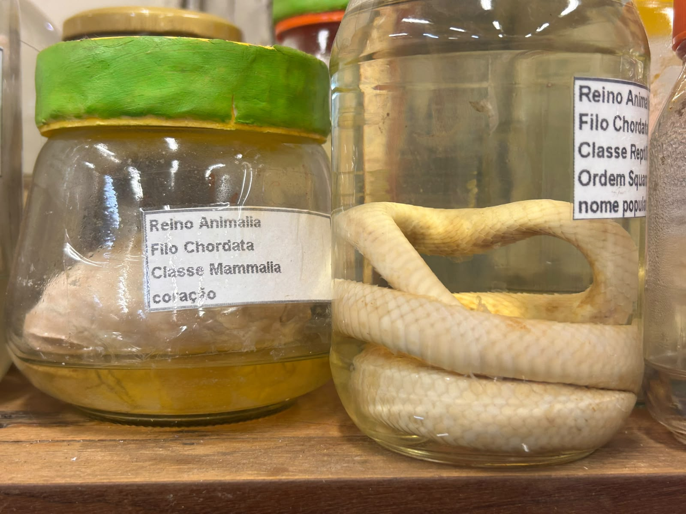

Me chamo Hanna, sou do 3°b exatas no ano de 2026 do Colégio Branca da Mota Fernandes.
Nesse blog, eu irei falar um pouco sobre o meu local preferido no colégio; o laboratório de ciências.
O que é um laboratório?
organização: Hanna
Um Laboratório escolar é um espaço onde os alunos podem realizar experimentos, observar fenômenos e
relacionar a teoria aprendida em sala de aula com a prática.
As disciplinas que o utilizam, geralmente são a área de ciência da natureza, ou seja
biologia, química e física.
Micróscopio: é um instrumento óptico ou eletrônico usado para ampliar imagens de objetos e estruturas muito pequenas,
tornando visíveis detalhes que não podem ser vistos a olho nu, como células, bactérias e tecidos.
Béquer: é um recipiente cilíndrico de fundo plano com um bico vertedor, usado em laboratórios
para misturar, aquecer ou armazenar líquidos.
Proveta: é um instrumento cilíndrico graduado, feito de vidro ou plástico, usado em laboratórios
para medir o volume de líquidos de forma prática
O laboratório permite transformar a teoria em experiências concretas. Por meio de microscópios, espécimes preservados e experimentos,
os alunos podem observar células, tecidos e organismos, tornando o aprendizado de Biologia mais visual, interessante e significativo.
Fonte:...

Coleção biológica do laborátorio
"organização: Hanna"
Além dos equipamentos utilizados nas aulas práticas, o laboratório possui uma coleção de espécimes preservados. Esses materiais permitem que os alunos
observem estruturas anatômicas reais de forma segura, contribuindo para o aprendizado de Biologia.
Importante: Os espécimes preservados presentes no laboratório fazem parte de uma coleção antiga.
Atualmente, a utilização e a obtenção desse tipo de material seguem normas legais e éticas rigorosas, e muitas escolas optam por modelos anatômicos e recursos digitais para o ensino.
.jpg)